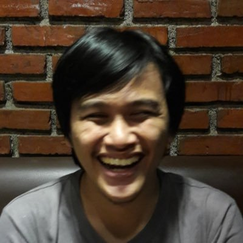

musicData = await FileAttachment("_data/music.json").json()
html`
<ul>
${musicData.top_artists.slice(0,5).map(artist => `<li>${artist.name} (${artist.playcount} plays)</li>`).join('')}
</ul>
<div style="display: flex; align-items: center; gap: 1rem; margin-top: 1rem;">
<a href="https://open.spotify.com/user/ynkaqmrfxb88i0hq6ujzjju8z" target="_blank" class="btn btn-success btn-sm" style="display: inline-flex; align-items: center; gap: 0.5rem; text-decoration: none; padding: 0.25rem 0.75rem; border-radius: 1.5rem;">
<svg xmlns="http://www.w3.org/2000/svg" width="16" height="16" fill="currentColor" viewBox="0 0 16 16">
<path d="M8 0a8 8 0 1 0 0 16A8 8 0 0 0 8 0zm3.669 11.538a.498.498 0 0 1-.686.165c-1.879-1.147-4.243-1.407-7.028-.77a.499.499 0 0 1-.222-.973c3.048-.696 5.662-.397 7.77.892a.5.5 0 0 1 .166.686zm.979-2.178a.624.624 0 0 1-.858.205c-2.15-1.321-5.428-1.704-7.972-.932a.625.625 0 0 1-.362-1.194c2.905-.881 6.517-.454 8.986 1.063a.624.624 0 0 1 .206.858zm.084-2.268C10.154 5.56 5.9 5.419 3.438 6.166a.748.748 0 1 1-.434-1.432c2.825-.857 7.523-.692 10.492 1.07a.747.747 0 1 1-.764 1.288z"/>
</svg>
Spotify Profile
</a>
<span class="text-muted" style="font-size: 0.875rem;">*Updated: ${musicData.last_updated.substring(0,10)}*</span>
</div>
`Aris Budi Wibowo

Hi, I’m Aris! 👋
Data Scientist at Kredivo with expertise in data science and a passion for fintech. I love exploring and sharing knowledge about data analysis, machine learning, and Python programming.


Recent Activities
- 🎤 Speaking at PyCon APAC 2024: “Beyond A/B Testing” in Yogyakarta
- 📊 Leading data initiatives and experimentation at ByteDance
- 📈 Contributing to data science communities and speaking at meetups
- ✍️ Writing about data analysis, ML, and experimentation
What I’m Currently Into
Music 🎵
Reading 📚
- “Causal Machine Learning”
- Latest research papers on experimentation methods
- Technical blogs on data science and ML
Learning 💻
- Advanced causal inference techniques
- Bayesian experimentation methods
- Large-scale data processing optimization
Projects 📈
- Building experimentation frameworks
- Developing ML models for user behavior analysis
- Creating data visualization tools
Interests 🌟
- Japanese Music & Culture
- Data Visualization
- Experimental Design
- Alternative & Indie Music
Featured Posts
Introduction to Machine Learning
python
machine-learning
tech
No matching items